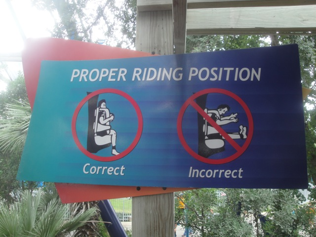
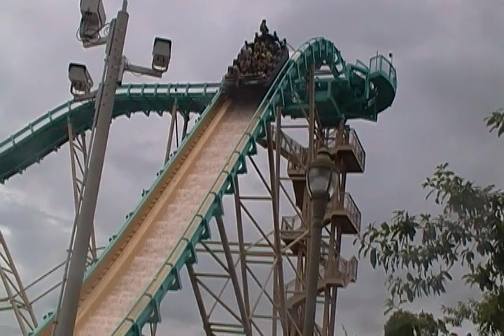
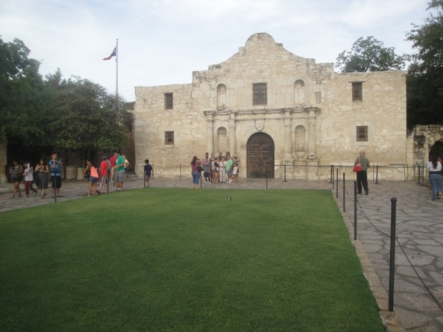

| |
Texas/Rocky Mtn Road Trip
Las Vegas/Castles'N'Coasters Six Flags Fiesta Texas
Schlitterbahn
Sea World San Antonio
Gavelston Pier
Six Flags Over Texas Silver Dollar City Frontier City Colorado Elitch Gardens Lakeside Park Glenwood Springs
All right. We're now at Sea World San Antonio. I'd been looking foreword to this day since I really enjoy the Sea World in San Diego, and this one has more coasters, so it should be even better.
 I heard A LOT of good things about Steel Eel. Hoping that it lives up to expectations.
I heard A LOT of good things about Steel Eel. Hoping that it lives up to expectations.
Gee, I wonder if the park is busy today.
 In the front, its fun, but nothing special.
In the front, its fun, but nothing special.
But much like Iron Rattler, if you sit in the back, you get all the good airtime on the ride.
Ok, time for the other big coaster at Sea World. Great White.

"What the hell are you people looking down for!!? That is not the proper riding position!!! Everyone must ride in the proper riding position!!!"
 Yep. Great White is yet another Batman clone. Because San Antonio just can't survive with only a single Batman clone in the city.
Yep. Great White is yet another Batman clone. Because San Antonio just can't survive with only a single Batman clone in the city.
I have no idea what made everyone say that this is the most forceful Batman ever, but that is NOT the case at all. It ran just like any other Batman Clone. If anything, I'd actually call Great White one of the weaker ones (but lets face it, they're all really damn strong). But on the bright side, it is the prettiest Batman Clone.
And of course, it wouldn't be a visit to Sea World without seeing some kind of show.
"All right. So for being Employee for the Month, we're going to allow you to be in our Water Skiing Show."
 It was a fun show with some good water skiing tricks and some funny lines from the Employee of the Month.
It was a fun show with some good water skiing tricks and some funny lines from the Employee of the Month.
"This special treatment is cool and all, but it still doesn't make up for the crappy minimum wage pay and lack of benefits."
Since we had plenty of time and with no lines in the park at all, I figured that I should check out their Shoot the Chutes ride (that does NOT count as a credit).

Unfortunetly, the ride was not too good. It was fun, but it just seemed to awkward and clumsy to me. Yeah, I have no regrets skipping the one at Europa Park to do much better stuff.
"Wait a second. Aren't I supposed to be on a tight budget for this trip? Crap!!!"
 Hooray!!! Time to embarrass myself yet again in the name of boosting my credit count!!!
Hooray!!! Time to embarrass myself yet again in the name of boosting my credit count!!!
Yes, I would like a few more rides on Steel Eel please.
It may not look that special, but it can haul ass in the backseat.
The airtime on this ride is this weird floater air/ejector air combo where it starts out as floater air, but then as the rest of the train drops, you get yanked out of your floater air and are yanked back into your seat. Pretty cool.
Grr. Right as I was almost done getting my Steel Eel & Great White shots, a thunderstorm hit. DAMMIT!!!!
Well at least the animal exhibits don't close due to lightning. So hey, more Sea World to check out.
Unfortunetly, the animal selection at Sea World San Antonio is sadly limited.
But hey. The Manta Rays are cool at least (No, you can't feed or pet them like in San Diego).
 "We keep trying to warn you of doom, but you keep misinterpretting our warnings as amusing attempts to punch footballs."
"We keep trying to warn you of doom, but you keep misinterpretting our warnings as amusing attempts to punch footballs."
All right. One last ride on Great White before heading on out.
Bye Sea World San Antonio, you're a fun park, but you're also a quick and easy park to conquer. I'd recommend putting in some more animal exhibits cause what I saw, I liked. It just needs to expand.
Where to now? Well considering how impressed I was with the Riverwalk at night, lets go check it out in daylight.
HOLY CRAP!!! I LOVE THIS PLACE!!!!!
"What are those two out of town weirdos doing inside that metal horse?"

This counts as seeing the Alamo.
Another famous landmark, checked off my list.
I love San Antonio.
I never in a million years thought I'd say this about any place in Texas, but there is almost something Europeanish about the Riverwalk, which I really like.
Another thing that makes San Antonio great, they don't ever tear down buildings. They just re-purpose them. Because they actually give a sh*t about their history in San Antonio. How much cooler would California be if we did that!!?
Gavelston Pier
Home
|